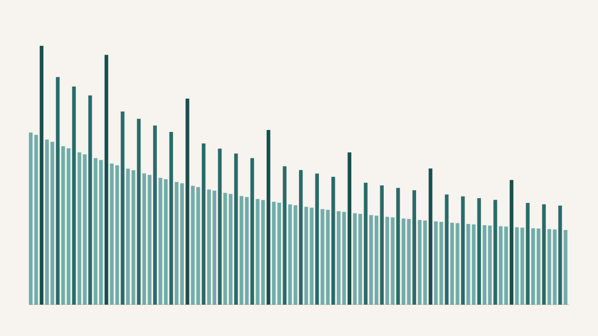

Do Prime Gaps Have Favorite Sizes?
Primes are supposed to be the unpredictable ones. There is no formula that spits out the next one, and the sequence 2, 3, 5, 7, 11, 13 looks, at a glance, like it wanders without a plan. But the differences between consecutive primes — the gaps — turn out to have distinct preferences. Some gap sizes show up far more often than their neighbours, and the favouritism is not subtle. In the first twenty-five million primes, a gap of 6 is enormously more common than a gap of 8, and a gap of 30 stands well above the gaps of 28 or 32 on either side. The primes, so irregular one at a time, keep a remarkably orderly set of habits in the aggregate. The question a student and I chased was whether those habits are real arithmetic or a trick of the eye — and the answer turned out to hinge on which number you compute to check.
The habits are easiest to see if you plot how often each even gap occurs. (Every gap above 2 is even, since one of any two consecutive odd numbers is divisible by nothing helpful.) The frequencies fall off roughly exponentially as gaps get larger, but not smoothly: laid over the decline is a strong rhythm, with every third even gap — 6, 12, 18, 24 — standing taller than the gaps flanking it, and outright spikes at 6 and at 30. These are sometimes called jumping champions: the gap sizes that, over a given range, win the popularity contest. And there is a clean reason for them. A gap is easy to realise if it dodges the constraints imposed by small primes. Six is divisible by both 2 and 3, so a pair of primes six apart sidesteps obstructions from the two smallest primes at once; thirty throws in 5 as well. The First Hardy–Littlewood conjecture turns this intuition into a number: a weight for each gap, built as a product over the odd prime divisors of half the gap, that says how favoured that gap should be. Gaps rich in small prime factors get boosted; gaps that fight the small primes get suppressed.
So there is a theory that predicts which gaps are popular, and there is data on which gaps are actually popular. The obvious thing to do is check whether they agree — correlate the predicted weights against the observed frequencies and read off how tight the relationship is. We did, and the correlation came back at 0.05.
The same data, two ways. Plot frequency against the theory's weight and the points scatter into vertical bands with no upward drift — the correlation is 0.05, statistically indistinguishable from nothing. Plot frequency against gap size and the theory's peaks land exactly where the spikes are. The relationship is real; the correlation just cannot see it.
A Pearson correlation of 0.05, with a p-value of 0.62, is the statistical equivalent of a shrug. Taken at face value it says the Hardy–Littlewood weights carry no information about how often gaps occur. And yet the peaks in the frequency plot sit precisely on the peaks the theory predicts. Both statements are true at once, and the reason they are is the whole point. A correlation asks a specific question: as the weight goes up, does the frequency go up too, proportionally, across all the gaps? The answer is no, because the weights and the frequencies live on different scales and slide past each other — small gaps are common for reasons of raw density that have nothing to do with the arithmetic weight, so the cloud of points spreads into vertical stripes with no global tilt. But that was never what the conjecture claimed. Hardy and Littlewood do not predict that a gap with twice the weight is twice as frequent. They predict an ordering: among gaps of similar size, the ones divisible by more small primes win. The structure is entirely local — is this gap favoured over its immediate neighbours? — and a global correlation is designed to average exactly that local structure away. The number that was supposed to confirm the pattern is blind to it by construction.
You can watch the same blindness in the leftover errors. If you take the theory's weights and rescale them by a single best-fit factor to line them up with the data, the residuals are not random noise: they run positive for small gaps — the gap of 6 alone is off by a clear margin — cross through zero around a gap of fifty, and turn gently negative after. One scaling factor cannot simultaneously match the steep drop at small gaps and the flatter arithmetic curve, so it splits the difference and leaves a signature behind. The misfit is systematic, which is another way of saying the structure is real and a single summary number is the wrong tool for it.
The primes' other famous habit concerns not which gaps are common but how large the rare ones get, and here a different number behaves better. Cramér's conjecture says the biggest gaps near a prime p grow no faster than the square of its logarithm, which means the normalised ratio of a gap to that square should stay bounded no matter how far out you go. Across all twenty-five million primes, up to just under half a billion, the running maximum of that ratio climbs briefly among the small primes and then flattens into a nearly horizontal line, sitting comfortably below the refined theoretical ceiling of about 1.123. Large normalised gaps do not become more common as the primes grow; if anything they thin out. It looks like clean support for Cramér — until you remember what finite evidence can and cannot do. The data at this scale genuinely cannot tell Cramér's original guess apart from a well-known correction to it, and Cramér's underlying model is itself known to be subtly wrong, because it pretends the integers are statistically independent when divisibility quietly correlates them. The flat line is consistent with the conjecture. It is not, and can never be, a confirmation.
That is the honest shape of computational number theory, and I find it more interesting than a clean win would have been. Twice over, the same lesson: the primes carry real structure, and the first number you reach for to measure it can miss it completely — a correlation that averages away a local pattern, a bounded ratio that cannot separate two models it appears to endorse. The gap between "consistent with" and "true" is where all the mathematics still lives. The computation does not close it. It just shows you, very precisely, how far there is still to go.
An honest caveat that should go before any stronger claim
Everything here is finite and therefore provisional. Twenty-five million primes sounds like a lot and is a rounding error against infinity, and both conjectures are statements about the limit as the primes grow without bound — so no dataset, however large, can do more than fail to contradict them. The specific numbers also depend on choices: how the gaps are binned, how the weights are normalised to sit on the same axis as the frequencies, and the floating-point precision underneath it all. Rare large gaps are exactly the events most sensitive to dataset size, so any claim resting on the extreme values should be read with caution. What the study earns is modest and real: over this range, the jumping champions are where the arithmetic says they should be, the large gaps stay bounded on the logarithmic scale, and — the part worth carrying away — a near-zero correlation is not the same as a near-zero pattern.